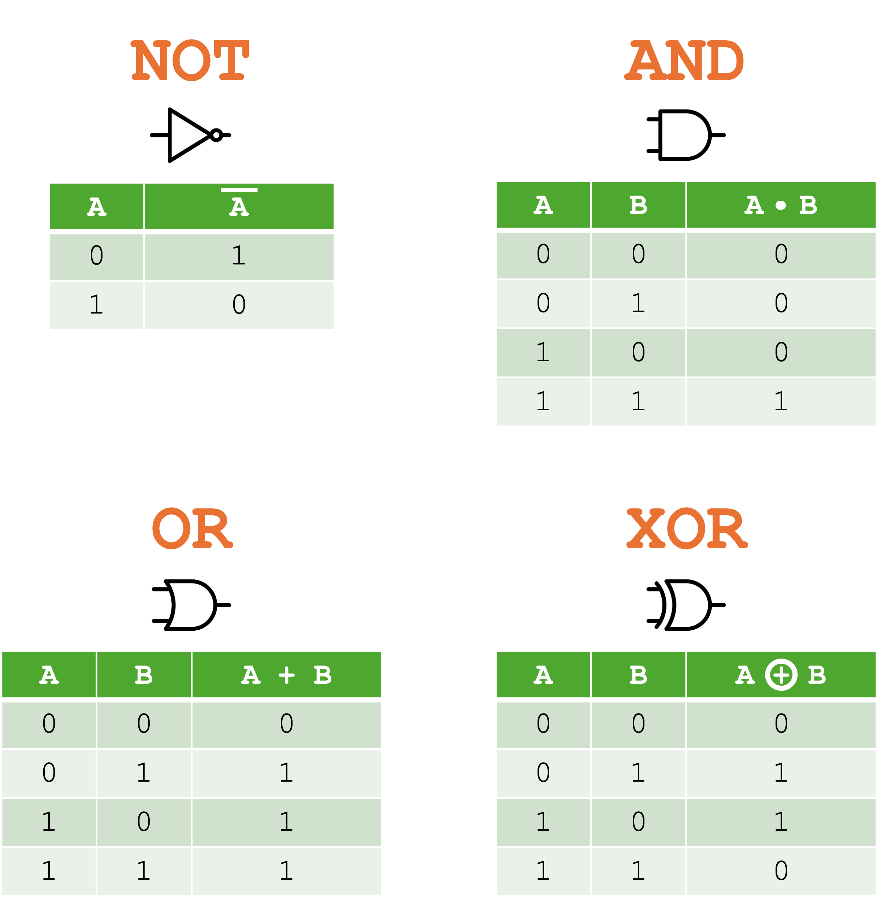
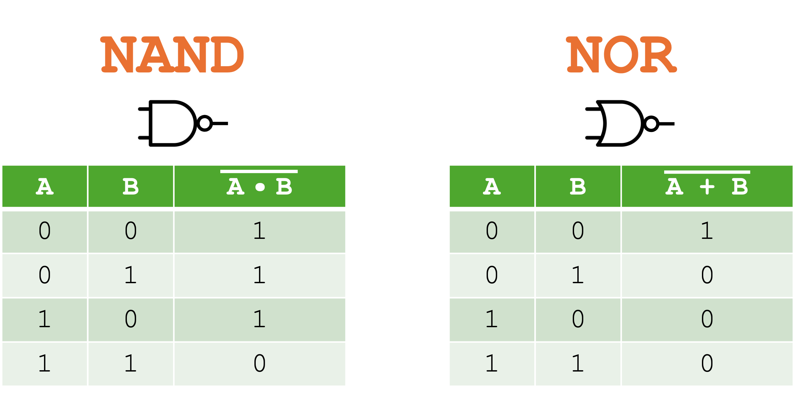
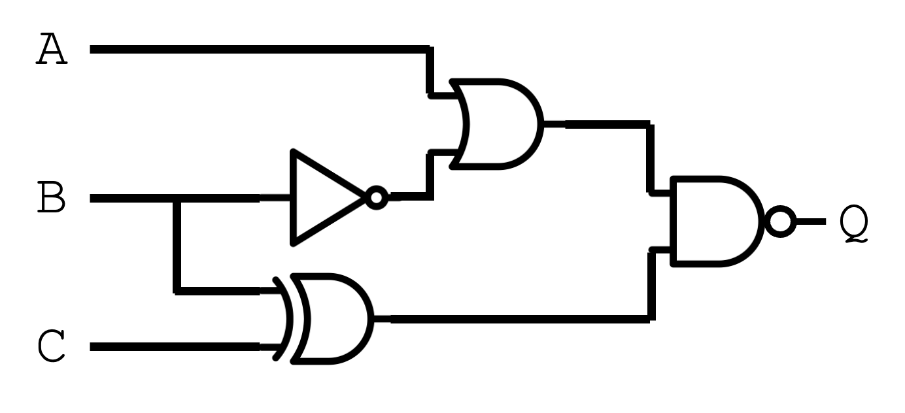

GCSE Link: 4.01 - Logic Gates
Diagram 1 shows the names, diagram symbols, text symbols and truth tables for the four logic gates we learned at GCSE.
 Diagram 1
Diagram 1

We will now introduce two new logic gates, NAND and NOR,
which are the opposites of AND and OR respectively.
Note that they do not have their own text symbols, unlike the others.
Diagram 2 shows the two new logic gates.
 Diagram 2
Diagram 2

We can combine these gates to form logic diagrams.
Diagram 3 shows the logic diagram representing the expression
Q = (A OR (NOT B))
NAND (B XOR C)
.
 Diagram 3
Diagram 3

 Write out a Boolean expression (using the text symbols) equivalent to the logic diagram in Diagram 3.
Write out a Boolean expression (using the text symbols) equivalent to the logic diagram in Diagram 3.
(A + ̅B) · (B ⊕ C)